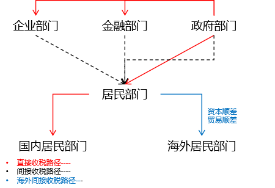
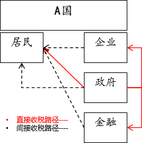

付鹏的财经世界-论债务
原文来自：付鹏的财经世界，备份到 github 上，向作者致以崇高的敬意。
论债务【一】：内债、外债、收税 和 “人口”
导读
最近不少人常挂在嘴边的一句话是“内债不是债”，这让我想起了童年时期老一辈人常说的完整原话：“上联：债务不是债，下联：只要人还在，横批：人死债消。”然而，大部分人目前仅关注“内债不是债”的说法，却忽略了后半句“只要人还在这”的关键性。这似乎给这些人造成了一种感觉，即债务可以随意扩张，但实际上，关键的约束性在于下半句。如果下半句不被提及，就会造成巨大的理解偏差。
—-付鹏 东北证券首席经济学家
“债务不是债，只要人还在”
父母那一代作为较早的金融行业的从业者，他们在一辈子工作中积累了非常深刻的经验总结，老一辈特别喜欢将其变成“对联”的形式让小孩子朗朗上口。这些“对联”不仅富有智慧，而且给年少的我会留下了深刻的印象，小的时候并不完全理解其中所包含的哲学思想，但是在之后成长的道路上却可以不断思考、领悟。
其中，我印象最深刻的一句是“上联：只做锦上添花，下联：绝不雪中送炭，横批：银行家”。这句“对联”形象地描绘了金融行业的某些特点，也体现了银行家的原则。
最近不少人常挂在嘴边的一句话是“内债不是债”，这让我想起了童年时期老一辈人常说的完整原话：“上联：债务不是债，下联：只要人还在，横批：人死债消。”然而，大部分人目前仅关注“内债不是债”的说法，却忽略了后半句“只要人还在这”的关键性。这似乎给这些人造成了一种感觉，即债务可以随意扩张，但实际上，关键的约束性在于下半句。如果下半句不被提及，就会造成巨大的理解偏差。
所有债务的背后都对应着收入，只有居民部门通过劳动（体力劳动和脑力劳动）来创造真正意义上的收入增长。而对于其他的任何部门而言它们的收入能力其实就是“收税”的能力。
在某种意义上，负债能力与收税能力具有等同性。就内债而言，其基本质量主要是指本国本币发行的主体，即本国政府。而外债则是本国主体向海外主体进行的借贷。无论是哪种债务形式，其核心都在于借贷政府权力范围内可控制的收税能力。
然而这里的“收税”能力并不仅仅局限于政府通过法定税率和税收科目进行的直接税收行为。实际上我们也可以将其称为间接性收税路径。在这种模式下，政府部门通过金融活动、企业部门活动以及居民部门的生产经营活动等渠道来获得直接性的税收。
直接“收税”、间接“收税”
间接性的税收路径涵盖了企业部门与居民部门之间以及金融部门与居民部门之间的经济活动。例如，企业在生产产品并将其销售给消费者时，从产品的利润中获取的部分可视为企业向消费者收取的一种税。这种税收的本质是企业提供产品或服务以换取消费者的回报。
再比如政府投资提供的公共设施，其实也是政府通过间接性的收税方式来获得相应的补偿。无论是直接收取的税费，还是通过政府债券等方式筹集的资金，本质上都是为了公共设施的建设和维护。这些公共设施为人们提供了必要的社会服务，使人们的生活更加便利和舒适。

政府通过公共投资的方式，建设和维护公共设施，这些设施为人民提供了必要的社会服务，使人民的生活更加便利和舒适。然而，这些公共设施的建设和维护本质上是通过间接性的收税方式来补偿财政债务。
公共设施本身并不会直接收取费用，包括铁路、公路、桥梁、基础设施、水电等设施，因为它们涉及到国计民生，更多的是一种补贴。政府需要通过间接性收税的方式来平衡财政，例如采取土地财政的方式，又或者将基建或公共设施与教育、医疗以及土地、房地产进行绑定。此外，如果投资能够拉动全局经济增长，那么虽然公共设施基础设施是补贴的，但是通过经济增长带来的直接税收增长也可以来实现一定的财政平衡。
金融部门的存在本质是为实体经济和整个投融资环节提供服务，其通过提供多样化的金融产品和服务，协助企业和个人进行相应的投资、生产及生活等活动。通过提供投融资服务并赚取相应的利差，这种利差的本质可视为金融部门对服务对象收取的一种“税”，而这种税最终会转嫁到最终服务对象的成本上。
所以当我们把这条这几条路径梳理清楚的时候，债务的本质就是从不同的居民部门身上获取收入。无论是直接收税还是间接性收税，其本质来自于终端的居民部门，
债务和人口之间的关系：税源
其实这也就是最后的那句话，债务的本质可持续性其核心是在于居民部门的可持续性，对于其他部门来讲，就是从不同的经营部门身上获取收入，这种收入可能是直接的，比如通过收税或者收费等方式；也可能是间接的，比如通过提供服务或者销售产品等方式。无论是哪种方式，其本质都是居民部门在参与和推动债务的循环。这就是我们讲的那个重要的下联“只要人还在”的核心。
居民、企业、金融及政府四大部门密不可分，无论是在企业部门、政府部门，还是金融部门，其本质都是为居民部门所服务的。教科书式完美的假设是政府、企业、金融等债务扩张都能够实现完美的推动居民部门的收入增长，而居民部门收入增长又可以对政府、企业、金融的债务进行反哺，进而达到“鸡生蛋，蛋生鸡”的永动循环；
但是不能忽视其中的“成本和损耗”这种完美的假设并不存在，在实际运行过程中，会出现这种失衡关系；
当企业、金融、政府获取的收入远大于居民部门的收入增长，这就会造成居民部门债务的不断扩大，慢慢就会导致整个系统最终出现”蛋生鸡，但是鸡却不生蛋”的问题。
居民部门债务不断扩大以及经济高速发展的阶段大家都没有深入思考过一个重要问题：那就是国内提供“税”的居民部门面临的人口老龄化和人口减少的问题。
实际上债务的大周期本质就是人口，如果居民部门面临的人口老龄化和人口减少而无法在国内获得足够的“税”源，那就必然需要向海外居民部门“收税”来平衡，只是这种“收税”的形式肯定不会像殖民地时代一样直接税收，而是通过“贸易和资本”的方式来实现和产生的；
论债务【二】：居民 、企业、金融和政府
导读
对内的债务运作方式，企业部门、政府部门和金融部门在内部的“收入”情况关乎到其“债务可持续性”，而这三个部门对内的债务可持续性主要依赖于内部居民部门的收入水平、储蓄水平以及可加杠杆空间。可以说内债本质上是依赖对内部居民部门“收税”的可持续性和能力来支持的。
—-付鹏 东北证券首席经济学家
对内的债务运作方式，企业部门、政府部门和金融部门在内部的“收入”情况关乎到其“债务可持续性”，而这三个部门对内的债务可持续性主要依赖于内部居民部门的收入水平、储蓄水平以及可加杠杆空间。可以说内债本质上是依赖对内部居民部门“收税”的可持续性和能力来支持的。

企业部门：通胀、通缩和”收税“能力
我们以企业部门为例进行说明，企业部门“收税”的潜台词就是生产厚需要通过销售方式由居民部门购买商品来实现“收税”，其实也就是企业利润需要由消费者埋单，最终端购买者的购买能力决定了这个环节中的所有利润，这也形成了一种“收税”的链。这种税收链不仅反映了企业部门在生产商品过程中的税收增长，还揭示了商品流通环节中税收的传递性和购买者在这条收税链中的重要地位。
我们可以进一步分析各环节的贡献。首先，企业家在生产商品过程中所获得的利润是税收增长的主要来源之一。这部分利润不仅体现了企业家对企业的经营成果，也反映了商品生产过程中的价值创造。此外，从生产到销售过程中的所有成本，如原材料、人工、运输等，都会直接或间接地反映在商品价格中。这些成本是税收增长的重要来源，也是购买者承担税收的一部分。
购买者的购买能力对于企业部门这个“收税”链的影响不可忽视。如果购买者的购买力较强，那么他们可以承担更高的商品价格，从而使得企业家获得更多的利润，同时也会增加流通环节的直接税收。相反，如果购买者的购买力较弱，他们只能承担较低的商品价格，这将会压缩企业家的利润空间，同时也会减少企业部门的收税能力，最终导致企业债务不可持续，甚至其他部门无法从企业部门获得直接税收。
最终，产成品的通胀和通缩的本质可以理解为是企业”收税“能力和盈利能力的变化。具体来说，如果企业在内部市场生产经营过程中获得利润，这实际上是对内收税的表现；而如果企业通过生产经营加工指导活动获得出口收益（贸易顺差），则可视为企业部门可以从全球范围内获得收税的能力。
金融部门：没有免费的服务
金融部门本质上属于服务业，金融提供的最基本的“存贷投汇融”业务，服务企业部门，政府部门和居民部门。该行业与简单的劳动型服务有所不同。劳动型服务产生的收入差异并不显著，然而金融服务的收入差异却是巨大的，顶尖的财富通常会集中在少数人手上。
金融部门在生产、投资、销售等核心环节中，通过精心构建的金融服务企业部门，精确核算企业部门的财务成本和资金成本，并将金融部门在存贷之间的利差等成本最终转化为销售成本。这些成本实际上是金融部门获取利润的关键来源。金融部门不仅为企业部门提供上市咨询服务，协助其筹措资金，还为企业家们提供远期收益的当期兑付和退出的方案。此外，金融业还为过剩的资本提供对应的资本市场投融资服务，这些服务并非免费提供，政府部门会通过资本市场的交易与金融交易来收集相关的成本与税负。金融业本身的巨大利润也主要来自于在终端环节获得的税收收入。从本质上来看，金融部门也是通过企业部门“收税”进行蛋糕的切分。
在金融部门为地方政府或政府部门提供融资服务的过程中，必然会产生相应的服务成本。这些成本最终将由政府部门转化为直接税收或间接收税，以平衡财政收支。因此，在国债发行和地方债务发行过程中，所有的债权和债务背后都对应着相应的服务成本。当然这些服务成本最终将以将由政府“收税”的方式来承担。
对于居民部门而言，存贷利差实际上是对居民储蓄和放贷之间收益的“收税”。这种无形的“收税”不仅为金融部门提供了持续的资金来源，金融部门获取的利差收益，以及通过提供杠杆服务，犹如彩虹般连接了现在与未来，进一步获取了未来现金流的利差，这些就是金融部门获取利润的源泉。
在金融部门的每个运营环节中，收取的“税收”是逐渐增大，它无声无息地渗透到每个环节之中，为金融部门的繁荣提供了强大的支撑，但其本身具有典型的两面性。
对于居民部门所需的金融服务，金融部门通过对未来现金流的预支和投资，虽然满足了当前的需求，但也已经引发了未来的杠杆效应。例如在房地产交易中，提供了信贷的服务支持，满足了居民部门当前的需求，但居民部门负债的大幅度增加也意味着未来风险的增加。由此可见金融部门利润的增加往往伴随着杠杆的提升。
金融部门是一个高风险的业务，如果居民、企业或政府部门能够获得更多的收入，那么金融可以放大这个过程，缩短这个时间。但如果三者本身已经债务负债累累，那么金融本质上来讲是无法解决其核心的矛盾的，甚至会因为其本身加剧矛盾。
政府部门的收入来源相对直接且简单，主要是通过税收的方式来实现。当然政府部门对于居民部门的直接税源就是来劳动和消费两个环节的“收税”。
除了直接性税收以外，还存在一种间接性“收税”的概念，在间接性方式中，政府将生产资料转化为产品，并在产品的购买环节中设置各种税收率。包括煤油气电、通讯等国有垄断领域，也是我们所税收的范畴。这种方式基本上是居民部门购买这些商品，通过价格隐含了“税”的概念，政府通过国有企业部门获得这一部分的税收，以商品方式来完成。
其中土地财政无疑是其中最典型的收税概念。土地财政是一种非常重要的财政收入来源，特别是在中国这样的大型经济体中。在土地财政模式下，政府通常会制定土地利用规划，确定可用于出售的土地数量和位置。这些土地将被划分成不同的区块，并公开拍卖给出价最高的开发商。开发商将在这些土地上建造房屋、商业设施或其他基础设施，以吸引居民和企业前来购买或租用。土地变为房地产，进而进入商品的生产、流通和销售环节，最终形成了税收的源头，这些收入被用于各种公共服务和基础设施建设，以促进城市发展和提高居民生活质量，同时这也反向促进了房地产市场的发展和城市化的进程。
城镇化的推进使得新基建周边的土地升值，房屋在买卖交易转让下获得税收收入，政府进一步推动城镇化进程，看似涌动，实则从“收税”的角度去看，这都是需要通过买房者来承担的；如果最终提供这种“间接性税“源的源头出现了问题，那么土地财政收入的不稳定性和不可持续性也给政府带来了债务风险。
其实土地财政和政府投资的本质是相同；
政府部门：直接税收和间接“收税”
政府投资行为的盈利模式，本质上必须转化为这些税源的投资收益或称为投资盈亏，以平衡预算，避免出现永久性的赤字或债务。在具体操作中，政府可以通过多种方式来获得投资收益或投资盈亏。
例如，政府可以通过直接投资或间接投资来获得收益。直接投资指的是政府直接参与某个项目的建设和运营，通过项目本身获得收益。间接投资则是政府通过提供财政补贴、税收优惠等政策措施来支持企业或个人进行投资，通过促进经济发展和增加就业等方式来获得间接收益。
减税降费的手段其实也是变相的”间接性”收税概念，政府可以通过制定各种税收政策来吸引企业或个人进行投资和消费，看似降低了当期的收入，但是却期望的是增加未来的税收收入。例如，政府可以降低企业所得税税率、提高个人所得税起征点等措施来吸引企业和个人进行投资和消费，从而促进经济的发展和增加税收收入。
在这个过程中，整个投资和”收税“之间会经历几个阶段：
首先，政府的投资行为本身就能很快地带来财政税收的增长，这说明税源非常健康，也说明整个经济急需政府的投资行为来拉动。
其次，投资项目本身可能不挣钱，但是可以通过拉动周边其他行为来获取利润。例如，基础设施建设可能更多提供的是一种服务性的职能，但是地方政府或中央政府从中获利的方式可能是通过新区的改造、土地的出让、房地产等方式进行税收的获得。
最后，当投资在当期不挣钱时，只能通过远期去进行贴补。这种远期的贴补实际上就是对未来预期的提前透支和折现，主要表现在土地财政上。土地财政通过房价的交易换手上涨来不断获取税收，但每一次的交易和上涨实际上都是居民部门付出的远期杠杆。在这个阶段，实际上把很多居民部门的远期财富进行了收税化。
居民部门：最终”税“源
居民部门的角色就是经济中的主要收税根源，包括了该部门当期收入，当期储蓄，远期负债能力等，如果单纯考虑内循环的话，该国居民部门的可持续性经营收入是支撑整个经济运转的重要因素。
从收入的增长，储蓄率（收入有多少能够当期剩余），储蓄背后的财富分配，到最终居民部门的加杠杆空间。居民部门的加杠杆空间是指其借款能力的上限。如果居民部门的加杠杆空间已经达到上限，财富固化，消费人群减少，消费力减弱，那么意味着其他各部门从居民部门可收税的能力将会大幅度下降，企业部门面临的可能是终端产成品需求不足的通缩，这必然会连锁反应在企业债务风险上，而政府部门的投资也将面临着债务得不到收入的支撑，政府继续投资债务的风险也将上升，而最终这会导致金融风险的出现。
对内的债务本质上是依赖居民部门的税收来支撑的。不同部门的债务风险其实对内都是由居民部门来决定的，那大的周期就必然绕不开人口问题，人口财富分配的问题；